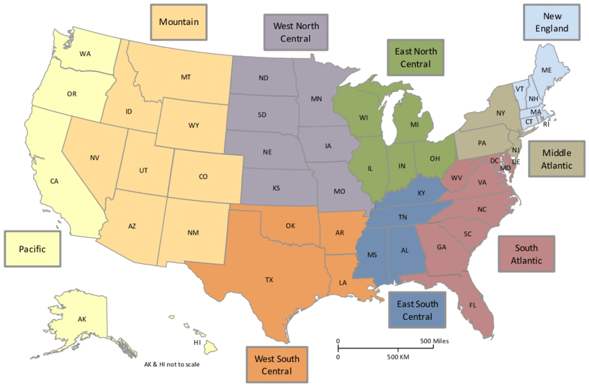

DATA 202 - Week 11
Modeling social in/justice
Center for Applied Data Science and Analytics
Part I: Context
Over the next several weeks, our goals will relate to the various ways we can integrate social and theoretical concepts (the context) into decisions around measurement (the content) and analysis (the code). Importantly, we will examine various historical contexts to make sense of what has been done. In doing so, we will make sense on how to build on theory using context.

Following in line from our discussions of W.E.B. Du Bois and his infamous infographics, our next example will be based on the work of Ida B. Wells-Barnett (1862-1931), a late 19th century and early 20th century activist and research journalist.
What do you know about Ida B. Wells-Barnett and her work in the late 1800s?

A Red Record. Tabulated Statistics and Alleged Causes of Lynchings in the US.
The below summary of The Red Record is from the New York Public Library:
The investigative journalist and activist Ida B. Wells, later Wells-Barnett, spearheaded the anti-lynching movement in the United States. Expanding on her groundbreaking exposé Southern Horrors: Lynch Law in All Its Phases (1892), A Red Record used mainstream white newspapers to document a resurgence of white mob violence, finding that more than 10,000 African Americans had been killed by lynching in the South between 1864 and 1894. Wells compiled statistics on alleged offenses and the geographic distribution and extent of lynching, and tied whites’ increased brutality and violence to their fear of African Americans’ increased political power. Her conclusion exhorts anti-lynching advocates to “[t]ell the world the facts,” for “When the Christian world knows the alarming growth and extent of outlawry in our land, some means will be found to stop it.”
The Red Record is an important historical text worth reading. Further investigation of the data and content found in Wells-Barnett’s The Red Record will reveal a relationship by individual incidents of lynching and broader systemic issues of racism.
In connecting the contexts of the United States in the late 1800s to the modern issues of racism at the systems level, we can consider the conceptual link between lynching then and fatal police shootings now.
Some important questions to consider:
What terms need to be defined?
What historical evidence may be needed to frame this conceptual link?
What data and data sources might help to inform this conceptual link?
Consider this article Shooting death of Ahmaud Arbery shows ‘culture of complicity’ akin to lynchings, says activist that connects the shooting of Ahmaud Arbery to lynching.
Consider the song Strange Fruit by Billie Holiday.
Record Cover of Strange Fruit by Billie Holiday
To further explore the connections between theory, method, and analysis, we will explore the use of a more recent data set at the individual level in Section 4. The data we will use is the Fatal Force data set from the Washington Post.
Since 2015, the Washington Post has collected a record of every fatal encounter with police in the United States.
This database is one resource that we’ll explore and connect to the Red Record.
What are some theoretical conceptions between Ida B. Wells-Barnett’s Red Record and the data collected by the Washington Post? How might these relationships inform our analysis? What is a theoretical construction that can be developed in relation to these connections?
Part II: Content
This week, we will discuss a series of data sources that can be used for your papers.
General Social Survey (GSS)
The main site for the GSS can be found here.
Problem: There was no high quality, accessible data set documenting societal change in America.
Solution: National Opinion Research Council (NORC) launched the General Social Survey (GSS)—our longest-running, most respected project.

Inter-university Consortium for Political and Social Research (ICPSR)
The main site for the ICPSR data can be found here.
ICPSR is research science data and resources on topics like social media, politics, economics, social sciences, government, GIS, & more. It was established in 1962. An integral part of the infrastructure of social science research, ICPSR maintains and provides access to a vast archive of social science data for research and instruction
Pew Research Center
The main site for the Pew Research Center can be found here.
The Pew Research Center (also simply known as Pew) is a nonpartisan American think tank based in Washington, D.C. It provides information on social issues, public opinion, and demographic trends shaping the United States and the world.
Pew Research Center logo
American National Election Studies (ANES)
The main site for the ANES can be found here.
The American National Election Studies are academically-run national surveys of voters in the United States, conducted before and after every presidential election.

ANES logo
Census data and resources linked directly to R/RStudio
IPUMS USA: “IPUMS provides census and survey data from around the world integrated across time and space. IPUMS integration and documentation makes it easy to study change, conduct comparative research, merge information across data types, and analyze individuals within family and community context. Data and services available free of charge.” (From IPUMS site)
Part III: Code
Washington Post Fatal Force data
The main site for the Fatal Force data can be found here.
The Washington Post makes the fatal force data publicly accessible on their website and they provide a direct link to their GitHub repository (or repo). To access the data, we will pull it directly into R from Github.
Load the data
We will need to install packages and/or load libraries to import and explore the data.
We then load the data directly into R from GitHub.
Understand the data
We will first turn the file into a tibble using the as_tibble function.
From there, we will use the glimpse(), names(), and str() functions to understand the data.
Let us take note of the variables and variable types.
Get a glimpse of the data.
Rows: 10,423
Columns: 19
$ id <int> 3, 4, 5, 8, 9, 11, 13, 15, 16, 17, 19, 21, …
$ date <chr> "2015-01-02", "2015-01-02", "2015-01-03", "…
$ threat_type <chr> "point", "point", "move", "point", "point",…
$ flee_status <chr> "not", "not", "not", "not", "not", "not", "…
$ armed_with <chr> "gun", "gun", "unarmed", "replica", "other"…
$ city <chr> "Shelton", "Aloha", "Wichita", "San Francis…
$ county <chr> "Mason", "Washington", "Sedgwick", "San Fra…
$ state <chr> "WA", "OR", "KS", "CA", "CO", "OK", "AZ", "…
$ latitude <dbl> 47.24683, 45.48742, 37.69477, 37.76291, 40.…
$ longitude <dbl> -123.12159, -122.89170, -97.28055, -122.422…
$ location_precision <chr> "not_available", "not_available", "not_avai…
$ name <chr> "Tim Elliot", "Lewis Lee Lembke", "John Pau…
$ age <int> 53, 47, 23, 32, 39, 18, 22, 35, 34, 47, 25,…
$ gender <chr> "male", "male", "male", "male", "male", "ma…
$ race <chr> "A", "W", "H", "W", "H", "W", "H", "W", "W"…
$ race_source <chr> "not_available", "not_available", "not_avai…
$ was_mental_illness_related <chr> "True", "False", "False", "True", "False", …
$ body_camera <chr> "False", "False", "False", "False", "False"…
$ agency_ids <chr> "73", "70", "238", "196", "473", "101", "19…View the variable names.
[1] "id" "date"
[3] "threat_type" "flee_status"
[5] "armed_with" "city"
[7] "county" "state"
[9] "latitude" "longitude"
[11] "location_precision" "name"
[13] "age" "gender"
[15] "race" "race_source"
[17] "was_mental_illness_related" "body_camera"
[19] "agency_ids" Understand the structure of the tibble.
tibble [10,423 × 19] (S3: tbl_df/tbl/data.frame)
$ id : int [1:10423] 3 4 5 8 9 11 13 15 16 17 ...
$ date : chr [1:10423] "2015-01-02" "2015-01-02" "2015-01-03" "2015-01-04" ...
$ threat_type : chr [1:10423] "point" "point" "move" "point" ...
$ flee_status : chr [1:10423] "not" "not" "not" "not" ...
$ armed_with : chr [1:10423] "gun" "gun" "unarmed" "replica" ...
$ city : chr [1:10423] "Shelton" "Aloha" "Wichita" "San Francisco" ...
$ county : chr [1:10423] "Mason" "Washington" "Sedgwick" "San Francisco" ...
$ state : chr [1:10423] "WA" "OR" "KS" "CA" ...
$ latitude : num [1:10423] 47.2 45.5 37.7 37.8 40.4 ...
$ longitude : num [1:10423] -123.1 -122.9 -97.3 -122.4 -104.7 ...
$ location_precision : chr [1:10423] "not_available" "not_available" "not_available" "not_available" ...
$ name : chr [1:10423] "Tim Elliot" "Lewis Lee Lembke" "John Paul Quintero" "Matthew Hoffman" ...
$ age : int [1:10423] 53 47 23 32 39 18 22 35 34 47 ...
$ gender : chr [1:10423] "male" "male" "male" "male" ...
$ race : chr [1:10423] "A" "W" "H" "W" ...
$ race_source : chr [1:10423] "not_available" "not_available" "not_available" "not_available" ...
$ was_mental_illness_related: chr [1:10423] "True" "False" "False" "True" ...
$ body_camera : chr [1:10423] "False" "False" "False" "False" ...
$ agency_ids : chr [1:10423] "73" "70" "238" "196" ...We should also view the head() and tail() of the data.
# A tibble: 6 × 19
id date threat_type flee_status armed_with city county state latitude
<int> <chr> <chr> <chr> <chr> <chr> <chr> <chr> <dbl>
1 3 2015-01-… point not gun Shel… Mason WA 47.2
2 4 2015-01-… point not gun Aloha Washi… OR 45.5
3 5 2015-01-… move not unarmed Wich… Sedgw… KS 37.7
4 8 2015-01-… point not replica San … San F… CA 37.8
5 9 2015-01-… point not other Evans Weld CO 40.4
6 11 2015-01-… attack not gun Guth… Logan OK 35.9
# ℹ 10 more variables: longitude <dbl>, location_precision <chr>, name <chr>,
# age <int>, gender <chr>, race <chr>, race_source <chr>,
# was_mental_illness_related <chr>, body_camera <chr>, agency_ids <chr># A tibble: 6 × 19
id date threat_type flee_status armed_with city county state latitude
<int> <chr> <chr> <chr> <chr> <chr> <chr> <chr> <dbl>
1 11277 2024-12-… point "not" gun Kirb… Jasper TX NA
2 11279 2024-12-… threat "" gun Char… Meckl… NC 35.3
3 11289 2024-12-… attack "car" undetermi… Lore… Crosby TX NA
4 11271 2024-12-… undetermin… "" undetermi… Belc… Rolet… ND NA
5 11275 2024-12-… threat "" gun Wood… Los A… CA 34.2
6 11276 2024-12-… undetermin… "" undetermi… Spok… Spoka… WA 47.7
# ℹ 10 more variables: longitude <dbl>, location_precision <chr>, name <chr>,
# age <int>, gender <chr>, race <chr>, race_source <chr>,
# was_mental_illness_related <chr>, body_camera <chr>, agency_ids <chr>What do you notice? What do you wonder?
There are many ways to use R to understand and explore our data.
We will use a mixture of base R and tidyverse commands to clean up our data.
We can also use the R for Data Science, 2nd Edition text as a guide.

R for Data Science, 2nd Edition
Codebook
Prior to beginning any cleaning and analysis, we need to know our data…
…before loading our data, we should have become more familiar with the codebook.
The code book will allow us to understand how data was collected and input into the data set. This often includes the levels of measurement for each variable and other related details.
The codebook for the Fatal Force data can be found online. We will need to navigate the GitHub site.
Main landing page: https://github.com/washingtonpost/data-police-shootings
Fatal Force Database (version 2): https://github.com/washingtonpost/data-police-shootings/tree/master/v2
A codebook for the data we have uploaded can be found at the bottom of the database page.
Let’s first remind ourselves of the variables and variable types.
tibble [10,423 × 19] (S3: tbl_df/tbl/data.frame)
$ id : int [1:10423] 3 4 5 8 9 11 13 15 16 17 ...
$ date : chr [1:10423] "2015-01-02" "2015-01-02" "2015-01-03" "2015-01-04" ...
$ threat_type : chr [1:10423] "point" "point" "move" "point" ...
$ flee_status : chr [1:10423] "not" "not" "not" "not" ...
$ armed_with : chr [1:10423] "gun" "gun" "unarmed" "replica" ...
$ city : chr [1:10423] "Shelton" "Aloha" "Wichita" "San Francisco" ...
$ county : chr [1:10423] "Mason" "Washington" "Sedgwick" "San Francisco" ...
$ state : chr [1:10423] "WA" "OR" "KS" "CA" ...
$ latitude : num [1:10423] 47.2 45.5 37.7 37.8 40.4 ...
$ longitude : num [1:10423] -123.1 -122.9 -97.3 -122.4 -104.7 ...
$ location_precision : chr [1:10423] "not_available" "not_available" "not_available" "not_available" ...
$ name : chr [1:10423] "Tim Elliot" "Lewis Lee Lembke" "John Paul Quintero" "Matthew Hoffman" ...
$ age : int [1:10423] 53 47 23 32 39 18 22 35 34 47 ...
$ gender : chr [1:10423] "male" "male" "male" "male" ...
$ race : chr [1:10423] "A" "W" "H" "W" ...
$ race_source : chr [1:10423] "not_available" "not_available" "not_available" "not_available" ...
$ was_mental_illness_related: chr [1:10423] "True" "False" "False" "True" ...
$ body_camera : chr [1:10423] "False" "False" "False" "False" ...
$ agency_ids : chr [1:10423] "73" "70" "238" "196" ...What do you notice? What do you wonder?
The use of # in line with your code is one valuable way to leave notes for yourself and any readers of your code. This also helps to support if others would like to reproduce your analysis.
Here, you may want to take note of some of the issues you see that could cause potential issues later as you begin your analysis. For example, a few things noteworthy observations will inform some initial changes.
Clean up the data
Let’s fix a few variables based on our previous observations and the codebook.
The
datevariable is listed as a character variable, however, we want to transform this into a more appropriate variable for the variable type. We can use the commandas.date()to do so.The
agevariable is listed as an integer, which is correct. However, we but want to change the variable type to numeric to conduct some specific analyses in thetidyverse.The
latitudeandlongitudevariables are listed as numeric variables. However, they contain some different information where values such as themeanor other measures of center do not make sense.The
was_mental_illness_relatedvariable is also listed as a character variable when, in fact, it should be a logical variable based on both the codebook and contents of the cells.The
body_cameravariable is also listed as a character variable when it should be a logical variable given the contents of the cells.
# fix vars
# change vars to appropriate formats
fatal$date <- as.Date(fatal$date) # check/change to date format
fatal$age <- as.numeric(fatal$age)
fatal$was_mental_illness_related <- as.logical(fatal$was_mental_illness_related)
fatal$body_camera <- as.logical(fatal$body_camera)
# format to 20YY
fatal.year <- format(fatal$date, format="20%y")
fatal$year <- fatal.year # add a year column to the df
fatal %>% relocate(state, year) -> fatal
fatal# A tibble: 10,423 × 20
state year id date threat_type flee_status armed_with city county
<chr> <chr> <int> <date> <chr> <chr> <chr> <chr> <chr>
1 WA 2015 3 2015-01-02 point not gun Shelt… Mason
2 OR 2015 4 2015-01-02 point not gun Aloha Washi…
3 KS 2015 5 2015-01-03 move not unarmed Wichi… Sedgw…
4 CA 2015 8 2015-01-04 point not replica San F… San F…
5 CO 2015 9 2015-01-04 point not other Evans Weld
6 OK 2015 11 2015-01-04 attack not gun Guthr… Logan
7 AZ 2015 13 2015-01-05 shoot car gun Chand… Maric…
8 KS 2015 15 2015-01-06 point not gun Assar… Saline
9 IA 2015 16 2015-01-06 accident not unarmed Burli… Des M…
10 PA 2015 17 2015-01-06 point not replica Knoxv… Alleg…
# ℹ 10,413 more rows
# ℹ 11 more variables: latitude <dbl>, longitude <dbl>,
# location_precision <chr>, name <chr>, age <dbl>, gender <chr>, race <chr>,
# race_source <chr>, was_mental_illness_related <lgl>, body_camera <lgl>,
# agency_ids <chr>Ancillary explorations
Sometimes when analyzing data, you may want to gather quick information.
For example, let’s say I also want to get a count of fatal shootings by year.
# A tibble: 10 × 2
year n
<chr> <int>
1 2015 995
2 2016 959
3 2017 984
4 2018 992
5 2019 994
6 2020 1021
7 2021 1050
8 2022 1097
9 2023 1164
10 2024 1167I was able to do this when I added the year variable to the dataframe.
What do you notice? What do you wonder?
Transform the data
We should check the structure of our data again.
tibble [10,423 × 20] (S3: tbl_df/tbl/data.frame)
$ state : chr [1:10423] "WA" "OR" "KS" "CA" ...
$ year : chr [1:10423] "2015" "2015" "2015" "2015" ...
$ id : int [1:10423] 3 4 5 8 9 11 13 15 16 17 ...
$ date : Date[1:10423], format: "2015-01-02" "2015-01-02" ...
$ threat_type : chr [1:10423] "point" "point" "move" "point" ...
$ flee_status : chr [1:10423] "not" "not" "not" "not" ...
$ armed_with : chr [1:10423] "gun" "gun" "unarmed" "replica" ...
$ city : chr [1:10423] "Shelton" "Aloha" "Wichita" "San Francisco" ...
$ county : chr [1:10423] "Mason" "Washington" "Sedgwick" "San Francisco" ...
$ latitude : num [1:10423] 47.2 45.5 37.7 37.8 40.4 ...
$ longitude : num [1:10423] -123.1 -122.9 -97.3 -122.4 -104.7 ...
$ location_precision : chr [1:10423] "not_available" "not_available" "not_available" "not_available" ...
$ name : chr [1:10423] "Tim Elliot" "Lewis Lee Lembke" "John Paul Quintero" "Matthew Hoffman" ...
$ age : num [1:10423] 53 47 23 32 39 18 22 35 34 47 ...
$ gender : chr [1:10423] "male" "male" "male" "male" ...
$ race : chr [1:10423] "A" "W" "H" "W" ...
$ race_source : chr [1:10423] "not_available" "not_available" "not_available" "not_available" ...
$ was_mental_illness_related: logi [1:10423] TRUE FALSE FALSE TRUE FALSE FALSE ...
$ body_camera : logi [1:10423] FALSE FALSE FALSE FALSE FALSE FALSE ...
$ agency_ids : chr [1:10423] "73" "70" "238" "196" ...While our initial changes are noted, observe the chr (character) variable type.
We may want to change these into fct (factor) variables types.
tibble [10,423 × 20] (S3: tbl_df/tbl/data.frame)
$ state : Factor w/ 51 levels "AK","AL","AR",..: 48 38 17 5 6 37 4 17 13 39 ...
$ year : Factor w/ 10 levels "2015","2016",..: 1 1 1 1 1 1 1 1 1 1 ...
$ id : int [1:10423] 3 4 5 8 9 11 13 15 16 17 ...
$ date : Date[1:10423], format: "2015-01-02" "2015-01-02" ...
$ threat_type : Factor w/ 9 levels "","accident",..: 6 6 5 6 6 3 7 6 2 6 ...
$ flee_status : Factor w/ 5 levels "","car","foot",..: 4 4 4 4 4 4 2 4 4 4 ...
$ armed_with : Factor w/ 31 levels "","blunt_object",..: 7 7 25 21 17 7 7 7 25 21 ...
$ city : Factor w/ 3749 levels "","Abbeville",..: 3074 51 3656 2966 1055 1373 561 135 429 1721 ...
$ county : Factor w/ 988 levels "","Acadia","Ada",..: 555 941 803 782 951 521 548 777 255 20 ...
$ latitude : num [1:10423] 47.2 45.5 37.7 37.8 40.4 ...
$ longitude : num [1:10423] -123.1 -122.9 -97.3 -122.4 -104.7 ...
$ location_precision : Factor w/ 8 levels "","address","block",..: 5 5 5 5 5 5 5 5 5 5 ...
$ name : Factor w/ 10046 levels "","A.B. Carr",..: 9305 6205 4933 6711 7057 5788 5762 1161 778 6193 ...
$ age : num [1:10423] 53 47 23 32 39 18 22 35 34 47 ...
$ gender : Factor w/ 4 levels "","female","male",..: 3 3 3 3 3 3 3 3 2 3 ...
$ race : Factor w/ 13 levels "","A","B","B;H",..: 2 9 5 9 5 9 5 9 9 3 ...
$ race_source : Factor w/ 7 levels "","clip","not_available",..: 3 3 3 3 3 3 3 3 3 3 ...
$ was_mental_illness_related: logi [1:10423] TRUE FALSE FALSE TRUE FALSE FALSE ...
$ body_camera : logi [1:10423] FALSE FALSE FALSE FALSE FALSE FALSE ...
$ agency_ids : Factor w/ 3866 levels "","1","100","100;3031",..: 3550 3514 1745 1211 3225 20 1200 3253 2360 2062 ...Take note of the changes. It seems that this method was not the best solution.
Which variables should be changed or reverted?
The answers can be found in the Fatal Force codebook.
Drop missing values
For efficiency, we will make changes to variables of interest and drop all missing values.
fatal %>%
mutate_at(c('threat_type', 'flee_status', 'armed_with', 'city', 'county', 'gender', 'race'), as.factor) %>%
drop_na() -> fatal_clean # generate a new `clean` dataframe
str(fatal_clean)tibble [8,981 × 20] (S3: tbl_df/tbl/data.frame)
$ state : chr [1:8981] "WA" "OR" "KS" "CA" ...
$ year : chr [1:8981] "2015" "2015" "2015" "2015" ...
$ id : int [1:8981] 3 4 5 8 9 11 13 15 16 17 ...
$ date : Date[1:8981], format: "2015-01-02" "2015-01-02" ...
$ threat_type : Factor w/ 9 levels "","accident",..: 6 6 5 6 6 3 7 6 2 6 ...
$ flee_status : Factor w/ 5 levels "","car","foot",..: 4 4 4 4 4 4 2 4 4 4 ...
$ armed_with : Factor w/ 31 levels "","blunt_object",..: 7 7 25 21 17 7 7 7 25 21 ...
$ city : Factor w/ 3749 levels "","Abbeville",..: 3074 51 3656 2966 1055 1373 561 135 429 1721 ...
$ county : Factor w/ 988 levels "","Acadia","Ada",..: 555 941 803 782 951 521 548 777 255 20 ...
$ latitude : num [1:8981] 47.2 45.5 37.7 37.8 40.4 ...
$ longitude : num [1:8981] -123.1 -122.9 -97.3 -122.4 -104.7 ...
$ location_precision : chr [1:8981] "not_available" "not_available" "not_available" "not_available" ...
$ name : chr [1:8981] "Tim Elliot" "Lewis Lee Lembke" "John Paul Quintero" "Matthew Hoffman" ...
$ age : num [1:8981] 53 47 23 32 39 18 22 35 34 47 ...
$ gender : Factor w/ 4 levels "","female","male",..: 3 3 3 3 3 3 3 3 2 3 ...
$ race : Factor w/ 13 levels "","A","B","B;H",..: 2 9 5 9 5 9 5 9 9 3 ...
$ race_source : chr [1:8981] "not_available" "not_available" "not_available" "not_available" ...
$ was_mental_illness_related: logi [1:8981] TRUE FALSE FALSE TRUE FALSE FALSE ...
$ body_camera : logi [1:8981] FALSE FALSE FALSE FALSE FALSE FALSE ...
$ agency_ids : chr [1:8981] "73" "70" "238" "196" ...However, with more time, we should inspect the data further and change all variables.
Check the data
One more check to make sure that we have dropped any missing observations.
I will use the sapply() function from Lab 1 to check for missing values.
First, we’ll check our original data.
Then we’ll examine our cleaned data.
Explore the data
We will begin to explore with a summary of our cleaned data.
state year id date
Length:8981 Length:8981 Min. : 3 Min. :2015-01-02
Class :character Class :character 1st Qu.: 2579 1st Qu.:2017-05-08
Mode :character Mode :character Median : 5271 Median :2019-11-13
Mean : 5448 Mean :2019-12-08
3rd Qu.: 8430 3rd Qu.:2022-09-03
Max. :11295 Max. :2024-12-29
threat_type flee_status armed_with city
shoot :2507 :1147 gun :5245 Los Angeles: 141
threat :2299 car :1360 knife :1537 Houston : 118
point :1689 foot :1173 unarmed : 506 Phoenix : 115
attack :1279 not :4978 undetermined: 340 San Antonio: 93
move : 513 other: 323 replica : 305 Las Vegas : 82
undetermined: 427 vehicle : 289 Albuquerque: 68
(Other) : 267 (Other) : 759 (Other) :8364
county latitude longitude location_precision
:3728 Min. :19.50 Min. :-160.01 Length:8981
Los Angeles: 216 1st Qu.:33.45 1st Qu.:-111.93 Class :character
Maricopa : 145 Median :36.09 Median : -94.17 Mode :character
Harris : 92 Mean :36.66 Mean : -96.78
Jefferson : 77 3rd Qu.:40.09 3rd Qu.: -83.05
Orange : 74 Max. :71.30 Max. : -67.87
(Other) :4649
name age gender race
Length:8981 Min. : 0.00 : 4 W :4079
Class :character 1st Qu.:28.00 female : 411 B :2209
Mode :character Median :35.00 male :8561 H :1562
Mean :37.43 non-binary: 5 : 804
3rd Qu.:45.00 A : 161
Max. :91.00 N : 121
(Other): 45
race_source was_mental_illness_related body_camera
Length:8981 Mode :logical Mode :logical
Class :character FALSE:7144 FALSE:7396
Mode :character TRUE :1837 TRUE :1585
agency_ids
Length:8981
Class :character
Mode :character
Ancillary explorations.
With the clean data, I may be interested in getting counts by state and then year as we explore.
# A tibble: 500 × 3
state year n
<chr> <chr> <int>
1 AK 2015 4
2 AK 2016 8
3 AK 2017 6
4 AK 2018 5
5 AK 2019 7
6 AK 2020 6
7 AK 2021 4
8 AK 2022 5
9 AK 2023 1
10 AK 2024 7
# ℹ 490 more rowsHow might this output support our model development?
Theory
Based on our explorations up to this point, what data and relationships might you examine?
Consider a basic path diagram to start and then build on your diagram using your theoretical constructions. Recall from previous lectures our discussions about variable types and their relationships in path diagrams (e.g., moderating vs. mediating).
graph LR A[X] --> B[Y]
Research questions
With our conceptual framing and backing theoretical work, we can proceed to examine exploratory analyses on the data. During the exploratory phase of analysis, a nice opportunity is presented that will allow you to examine the data is to generate a series of discrete research questions that help you make associations between various components of your data.